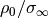
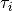

Usage and implementation details¶
Best practices¶
The following procedure is recommended for new data sets and focuses on inversions using ccd_single and ccd_time:
Initially invert with variable
 values for the frequency
regularization
values for the frequency
regularizationFine-tune with a fixed lambda (this in general yields more robust results and makes results comparable)
Usually the third starting model yields the most robust results:
DD_STARTING_MODEL=3 cdd_single ...
Normalization can help… :
ccd_single --norm 10
For time regularization: here only a fixed lambda can be used. Start with a small value and take a look at the maximum regularization strength for the time-regularization. The regularization strength is automatically plotted when the --plot option is enabled.
while the structure of the input files is fixed, the data format can be changed using the --data_format option. Thus a conversion from conductivities to resistivities and vice versa is not necessary, as well as a conversion between real/imaginary part and magnitude/phase format.
the --tmp option can improve execution speed on conventional hard drives (don’t expect huge improvements for solid state discs (SSDs).
Normalization¶
The CDD is linear in , as as such data can be normalized both in magnitude/phase, or real and imaginary parts:
The factor A is determined by norming the lowest frequency value to the target value B given by the --norm switch:
Determining relaxation time ranges¶
The following approach to select  values is called ‘data’
values is called ‘data’
For forward modelling and inversions there is always the question of which
range of relaxation times to consider. To answer this we consider the typical
frequency range of measurements from 1 mHz to 50 kHz. By considering one-term
debye models we can compute the minimum and maximum values using
the formula:
For the implementation the number of values per decade
is specified. The maximum -interval corresponds to the frequency
range . Now compute the total number  of
values using the formula
of
values using the formula

Note
The maximum frequency range considered here spans exactly 8 decades. Thus no rounding needs to take place.
The pool of possible values is now created by
np.logspace(-3,5,N_D)
The values for a real data set will now be selected from this
pool, depending on the minimum and maximum frequency of the data set. This
procedure ensures that always the same values are used
independently from the minimum and maximum data frequencies. However, the
values will still be dependend on !
The following approach to selecting values is called ‘data_ext’.
This approach adds one frequency decade to each of the frequency limits of the
data prior to converting those limits to values.
Using the Cole-Cole distribution¶
A single-termin Cole-Cole spectrum with c = 0.5 was fitted using kernel functions of c = (0.3, 0.5, 0.7, and 1.0).
c = 0.3:
The kernel function is too wide to fit the response:

c = 0.5
The kernel function has the same slope as the response. Any widening of the peak in the RTD is due to regularisation smoothing.

c = 0.7

c = 1.0

Creating synthetic relaxation time distributions¶
The  distribution is determined by the frequencies of the data
and number of values per frequency decade set by the user. For synthetic
studies or benchmarks we need to set the corresponding  values for
those relaxation times. We do this either by explicitly setting those
relaxation times for a small number of terms (usually one to three in
correspondence to the Cole-Cole/Debye model), or by addition of one or more
log-normal distributions to the distribution.
values for
those relaxation times. We do this either by explicitly setting those
relaxation times for a small number of terms (usually one to three in
correspondence to the Cole-Cole/Debye model), or by addition of one or more
log-normal distributions to the distribution.
(Source code, png, hires.png, pdf)
{kind=link}
{kind=link}
Normally distributed noise can then be added to this spectrum:
(Source code, png, hires.png, pdf)
{kind=link}
{kind=link}